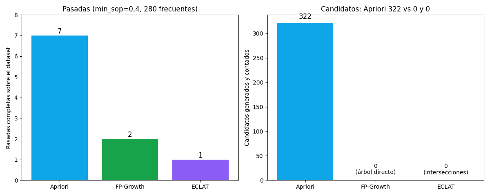

Bloque G · Frequent Itemsets · Lección 0052 · mié 18 nov
FP-Growth y ECLAT: los mismos frecuentes, sin candidatos ni re-barridos
Win de hoy: Apriori genera candidatos y re-barre el CSV en cada nivel (7 pasadas con min_sop = 0,4). FP-Growth comprime todo en un árbol con 2 pasadas y ECLAT cruza listas de filas en memoria con 1: mismo resultado, distinto costo.
1 · Por qué Apriori no alcanza
Recap de la lección 0041 (mié 18): con min_sop = 0,3 Apriori cuenta 825 candidatos barriendo las 1436 filas nivel por nivel (9 niveles, 9 pasadas), y con min_sop = 0,4 todavía hace 7 pasadas para 280 frecuentes. La poda ayuda, pero el esquema tiene dos costos estructurales: (1) genera candidatos que después descarta y (2) re-barre todo el dataset una vez por nivel. Con 16 extras se aguanta; con los miles de productos de un súper real, es intratable.
Dos ideas distintas atacan esos dos costos: FP-Growth elimina los candidatos (§2) y ECLAT elimina los re-barridos (§3). Los tres algoritmos devuelven exactamente los mismos frecuentes: solo cambia el camino.
2 · FP-Growth: comprimir y minar (concepto + ejemplo a mano)
FP-Growth (Han et al., 2000) hace solo 2 pasadas: en la 1ª cuenta los soportes individuales y poda los infrecuentes; en la 2ª comprime todas las transacciones en un árbol-FP: cada ticket entra ordenado de ítem más a menos frecuente, y los tickets que comparten prefijo comparten rama (los contadores se acumulan en los nodos). Después mina el árbol recursivamente por sufijo, sin generar ni un candidato: para cada ítem junta su base de patrones y repite.
Ejemplo a mano, 5 tickets (min_sop = 0,4, o sea al menos 2 de 5). Verificá cada conteo a ojo:
| Ticket | Ítems | Ordenado por frecuencia |
|---|---|---|
| T1 | leche, pan, queso | leche, pan, queso |
| T2 | leche, pan | leche, pan |
| T3 | leche, pan, vino | leche, pan |
| T4 | leche, queso | leche, queso |
| T5 | pan, queso | pan, queso |
1ª pasada: leche 4, pan 4, queso 3, vino 1 → el vino se poda (1 < 2). 2ª pasada: el árbol queda con una rama raíz → leche(4) → pan(3) → queso(1), más leche → queso(1) de T4 y raíz → pan(1) → queso(1) de T5. Minando por sufijo: queso trae base {leche, pan}:1, {leche}:1, {pan}:1 → leche:2 y pan:2, o sea {queso}, {leche, queso} y {pan, queso}; pan trae base {leche}:3 → {pan} y {leche, pan}; leche trae {leche}. Total: 6 frecuentes, los mismos que Apriori (que acá haría 3 pasadas y 8 conteos: 4 + 3 + 1).
Cierre honesto: implementar el árbol-FP completo (nodos, enlaces, minería recursiva) excede esta lección corta;
la librería mlxtend lo trae listo, pero está fuera del stack del curso (solo pandas/numpy/matplotlib
y afines). Lo que importa es la idea: comprimir en 2 pasadas y minar sin candidatos.
3 · ECLAT en 10 líneas: listas de filas e intersecciones
ECLAT da vuelta el dataset: en vez del formato horizontal (cada fila, sus ítems), usa el formato vertical: cada ítem guarda su TID-list, la lista de filas donde aparece. El soporte de {CD, computadora} es entonces |intersección de sus dos listas| / n: se cruzan conjuntos en memoria, sin re-barrer el CSV jamás (1 sola pasada inicial).
import pandas as pd
B = pd.read_csv("../ToyotaCorolla.csv")
n = len(B) # 1436
def tid(col): # formato vertical: filas con el ítem
return set(B.index[B[col] == 1])
cd, board = tid("CD_Player"), tid("Boardcomputer")
print(len(cd), len(board)) # 314 423
ambos = cd & board # intersección, sin re-barrer
print(len(ambos), round(len(ambos) / n, 4)) # 225 0.1567
trio = ambos & tid("Central_Lock")
print(len(trio), round(len(trio) / n, 4)) # 181 0.126Lectura: CD la traen 314 autos y computadora 423; ambos a la vez, 225 (soporte 0,1567 — el mismo 0,157 de la tabla de la lección 0040 (mar 17), calculado sin re-barrer). Agregar cierre centralizado achica a 181 (0,126): cada intersección solo achica, nunca agranda — la monotonicidad de la lección 0039 (mar 17), en versión vertical.
Tu turno: cruzá Central_Lock con Powered_Windows y verificá que da
0,540 (el pack eléctrico de 0039/0040). Luego probá el trío {cierre, vidrios, dirección}.
4 · Figura: mismo resultado, distinto costo

Regenerar la figura (mismo resultado versionado en assets/img/toyota/):
python3 scripts/make_figures.py --only fpgrowth-eclat-sin-candidatos5 · Quiz (auto-chequeo inmediato)
6 · Fuente primaria y cierre del Bloque G
Para profundizar (1 fuente): Tan, Steinbach & Kumar, Introduction to Data Mining — cap. 6 (FP-Growth y ECLAT). Más contexto en RESOURCES.
Cierre Bloque G (17–18 nov): changuitos (0039) → reglas (0040) → Apriori (0041) → FP-Growth/ECLAT (hoy). Siguiente: 0053 (Bloque H, mié 25 nov: qué es una RNA).